Real-time topological transitions from Euclidean correlators via HLT inversion
The 43rd International Symposium on Lattice Field Theory
July 23, 2026
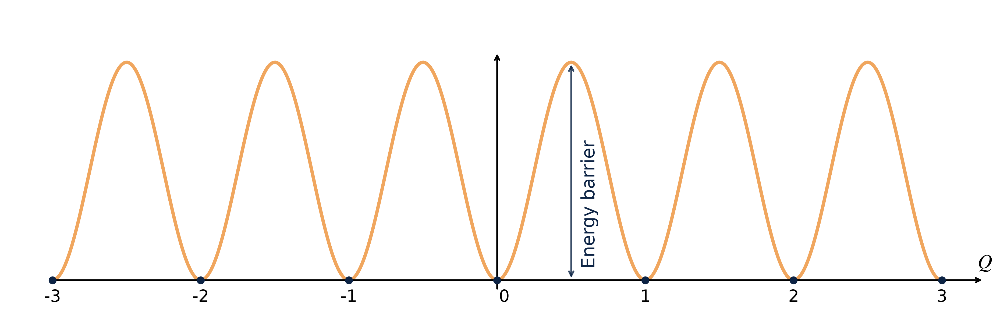
.
Understanding QCD topology is essential
for hadron physics and finite-temperature QCD.
σφαλερός (sphalerós)
Sphaleron Rate:
Rate of real time thermal transitions above sphaleron barriers separating topologically-inequivalent QCD vacua
σφαλερός (sphalerós)
Sphaleron Rate:
Rate of real time thermal transitions above sphaleron barriers separating topologically-inequivalent QCD vacua
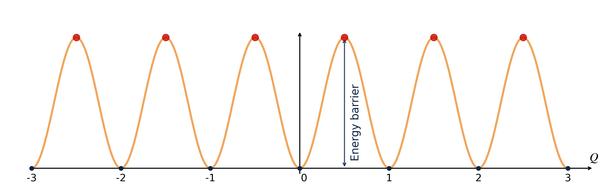
σφαλερός (sphalerós)
Sphaleron Rate:
Rate of real time thermal transitions above sphaleron barriers separating topologically-inequivalent QCD vacua
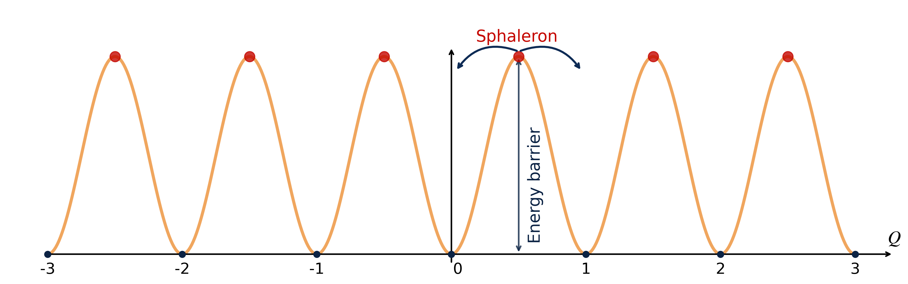
Sphaleron Rate:
Rate of real time thermal transitions above sphaleron barriers separating topologically-inequivalent QCD vacua
\[ \Gamma_{\mathrm{sphal}} \equiv \int dt d^3x ~\langle q(\vec{x},t) q(\vec{0},0)\rangle _T \]
\[ \langle \mathcal{O} \rangle _T = \frac{1}{\mathrm{Tr}\{ e^{-\mathcal{H}/T} \}} \mathrm{Tr}\{e^{- \mathcal{H}/T} \mathcal{O}\} \]
Why do we care?
The Axion:
A pseudo-Goldstone boson proposed to solve the Strong CP Problem and also a leading Dark Matter candidate.
Thermal production in the Early Universe (\(\small T \sim T_c \div 10\, T_c\)): the axion relic abundance follows from a momentum-dependent Boltzmann equation [3] \[ \small \frac{df_{\vec{p}}}{dt} = \left(1+f_{\vec{p}}\right)\Gamma_{a}^{(+)}(p) - f_{\vec{p}}\,\Gamma_{a}^{(-)}(p) \]
The Key Input: the axion interaction rates are fixed by the topological rate at on-shell four-momentum:
\[ \small \Gamma_a^{(-)}(p)=e^{E_p/T}\, \Gamma_a^{(+)}(p)=\frac{\Gamma_{\text{top}}(\omega = E_p,\, p)}{2 E_p f_a^2}, \qquad E_p = \sqrt{m_a^2 + p^2} \simeq p \]
Higher momenta decouple later from the thermal bath: axion production may equilibrate
at different times depending on \(p\) \(~\Rightarrow~\) we need \(\Gamma_{\mathrm{top}}\) at finite momentum
The full momentum-dependent generalization of the sphaleron rate:
\[ \Gamma_{\mathrm{top}}(\omega,p) = \int dt\, d^3x~ e^{\,i x_\mu p^\mu}\, \langle q(\vec{x},t)\, q(\vec{0},0)\rangle _T\,, \qquad p_\mu = (\omega, \vec p) \]
This talk: proof-of-concept in quenched SU(3) at \(T \simeq 1.24\,T_c \simeq 360\) MeV:
\(\Gamma_{\mathrm{top}}(\omega, p)\) for momenta up to \(p/T \sim 10\), both off-shell and on-shell (\(\omega = p\))
A controlled feasibility study in view of the (much more expensive) full-QCD case.
\[ \Gamma_{\mathrm{top}}(\omega,p) = \frac{2}{1-e^{-\omega/T}}\; \rho(\omega,p) \]
The Challenge:
How to recover \(\rho(\omega, p)\) from noisy lattice data for \(G_E(\tau, p)\)?
\[ G_E({\color{#EB811B}\tau_i}, p) = -\int_0^\infty \frac{d\omega}{\pi} \left[\frac{\rho(\omega,p)}{\omega}\right] K'(\omega, {\color{#EB811B}\tau_i}), \quad K'(\omega,\tau) = \omega\, \frac{\cosh\left(\frac{\omega}{2T} - \omega\tau\right)}{\sinh\left(\frac{\omega}{2T}\right)} \]
Working with \(\rho(\omega,p)/\omega\) keeps both the unknown and the kernel finite as \(\omega \to 0\).
Input from the Lattice:
The Unknown (Physics):
The Problem:
This is a Fredholm Integral Equation of the 1st Kind ⇒ Ill-Posed.
Infinitely many \(\rho(\omega, p)\) reproduce the discrete data within error bars.
No pointwise reconstruction → target a smeared spectral density built as a linear combination of the data [5]:
\[ \frac{\bar\rho(\omega^*, p)}{\omega^*} = -\pi \sum_{\tau = a}^{1/(2T)} g_\tau(\omega^*)\, G_E(\tau, p) \;=\; \int_0^\infty d\omega\; \Delta(\omega, \omega^*)\, \frac{\rho(\omega,p)}{\omega} \]
The coefficients \(g_\tau(\omega^*)\) define the smearing kernel \[ \Delta(\omega, \omega^*) = \sum_\tau g_\tau(\omega^*)\, K'(\omega, \tau) \]
chosen so that \(\Delta\) resembles a target kernel of width \(\sigma\): \[ \delta_\sigma(\omega, \omega^*) = \frac{4}{\sigma \pi^2} \frac{x}{\sinh(x)}, \quad x = \frac{\omega - \omega^*}{\sigma} \]
\(\sigma\) is an input!
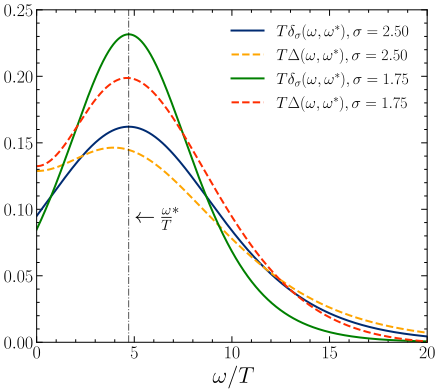
Reconstructed \(\Delta\) vs target \(\delta_\sigma\) at \(\omega^*/T = p/T \simeq 4.71\).
The \(g_\tau(\omega^*)\) minimize a functional balancing accuracy and stability:
\[F_\lambda[g] = (1-\lambda)\, A_\alpha[g] + \lambda\, B[g]\]
\[A[g] = \int_{0}^\infty d\omega \, \left[ \Delta_\sigma (\omega) - \delta_\sigma(\omega) \right]^2 e^{2\omega}\]
\[B[g] = \mathbf{g}^T \cdot \mathbf{Cov} \cdot \mathbf{g}\]
The parameter \(\lambda \in [0, 1)\) controls the trade-off.
(Unlike standard Backus-Gilbert, we fix \(\sigma\) as an input and scan \(\lambda\) for stability.)
Discretization:
Wilson plaquette action, heat-bath + over-relaxation: \[\mathcal{S}_{\mathrm{YM}}[U] = -\frac{\beta}{3} \sum_{x,\mu>\nu} \mathrm{Re}\,\mathrm{Tr}\left[U_{\mu\nu}(x)\right]\]
Observable
Clover topological charge density \(q_L(x)\) after cooling: \[ Q_L^{\vec{p}}(n_t) = \sum_{\vec{n}} e^{i\vec{p}\cdot\vec{n}} q_L(n_t, \vec{n}) \]
and we compute the correlator: \[ G^{\vec{p}}(\tau) = \langle Q_L^{\vec{p}}(\tau) Q_L^{-\vec{p}}(0) \rangle \]
Line of Constant Physics: \(\;T \simeq 1.24\,T_c\), \(\;LT = 4\)
| \(N_s\) | \(N_\tau\) | \(\beta\) | \(a\) \(\mathrm{[fm]}\) | \(T/T_c\) | \(\mathrm{Stat}\) |
|---|---|---|---|---|---|
| 48 | 12 | 6.440 | 0.0460(7) | 1.244(18) | 53.9k |
| 56 | 14 | 6.559 | 0.0395(6) | 1.242(18) | 21.7k |
| 64 | 16 | 6.665 | 0.0345(5) | 1.244(18) | 15.7k |
Momenta along \(\hat x\), quantized by the spatial size: \[ ap = \frac{2\pi}{N_s} k \;\;\Rightarrow\;\; \frac{p}{T} = \frac{\pi}{2}\, k, \quad k = 0, \ldots, 6 \]
\(LT=4\) (vs 3 of [7]) → finer momenta, up to \(p/T \simeq 9.4\)
Artifacts:
Smoothing introduces a new scale \(R_s = a\sqrt{\tfrac{8}{3} n_{\mathrm{cool}}} = \sqrt{8 t_{\mathrm{GF}}}\) [6]
We must remove this dependence to recover physical results.
A controlled result requires three limits:
Method 1 → extrapolate first, invert last
\(G_E(\tau, p;\, a, R_s)\) → \(a \to 0\), then \(R_s \to 0\) → HLT → \(\Gamma_{\mathrm{top}}(\omega, p)\)
Method 2 → invert first, extrapolate last
\(G_E(\tau, p;\, a, R_s)\) → HLT → \(a \to 0\), then \(R_s \to 0\) → \(\Gamma_{\mathrm{top}}(\omega, p)\)
Two different orderings of ill-conditioned steps: their agreement is a strong check
that all systematics are under control [7].
\(\frac{1}{T^5}G_E = \frac{1}{T^5}G_E\big|_{\mathrm{cont}} + C_1 (aT)^2\) at fixed \(R_sT\;\) → \(\;\frac{1}{T^5}G_E\big|_{\mathrm{cont}} = \frac{1}{T^5}G_E\big|_{R_s \to 0} + C_2 (R_sT)^2\)
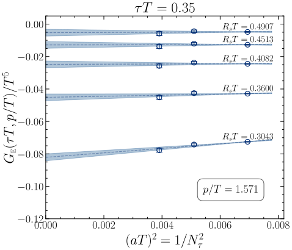
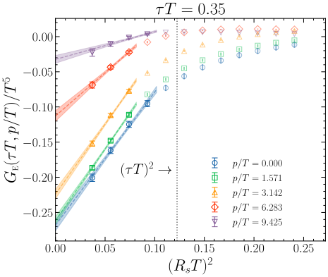
\(R_s < \tau\) shrinks the usable window as \(\tau\) decreases → reliable double limit for \(0.25 \le \tau T \le 0.5\).
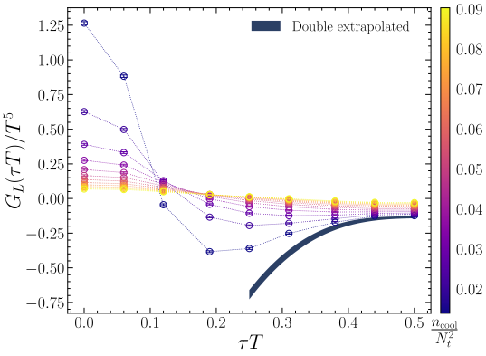
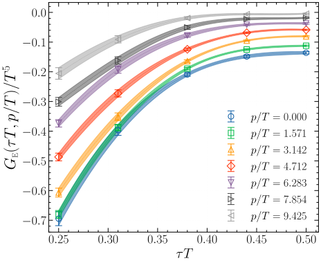
Observation: \(G_E(\tau, p)\) is suppressed with \(p\) at every time separation.
One might expect the rate to simply follow this suppression, but does it?!
Inversion at \(\omega^*/T = p/T \simeq 4.71\), for each \((\omega/T, p/T)\) pair, scan \(\lambda\) and several \(\sigma/T \in [1.25, 2.5]\)
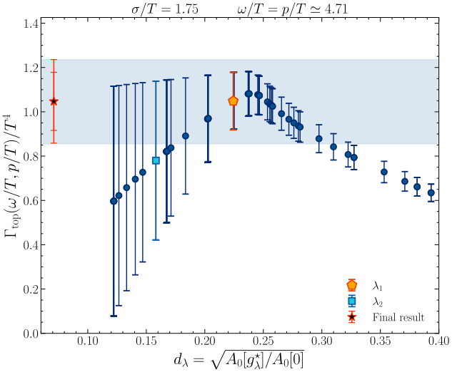
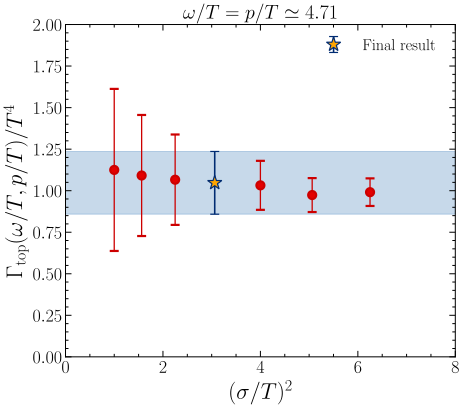
No detectable \(\sigma\)-dependence → final values quoted at \(\sigma/T = 1.75\), the middle of the explored range.
Invert the finite \((a, R_s)\) correlators, then repeat the double limit on the rate \(\Gamma_{\mathrm{top}}\) itself.
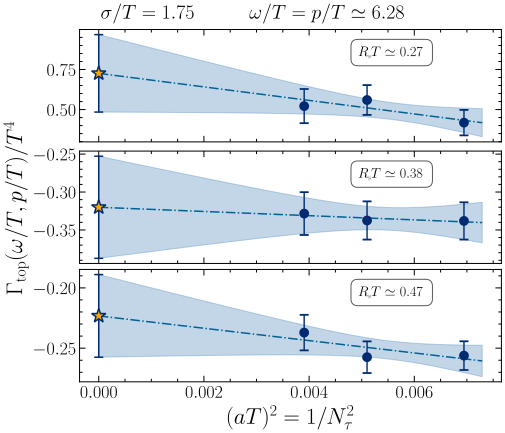
Continuum limit at fixed \(R_sT\) (\(\omega/T = p/T \simeq 6.28\)):
smooth, slope practically independent of \(R_sT\).
Then \(R_s \to 0\), on the rate
constant fit (err ×2.5) & linear fit in \((R_sT)^2\)
→ fully compatible
★ Method 2 → invert, then extrapolate ◇ Method 1 → extrapolate, then invert
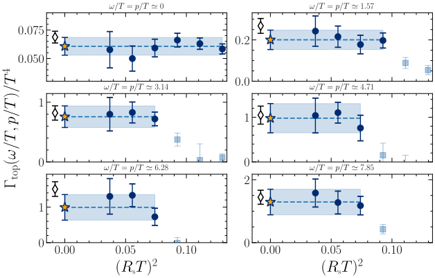
The two independent orderings agree at every energy → all systematics under control.
\(\omega = p\) (axion kinematics). Plotted: \(\;f(\omega)^{-1}\, \Gamma_{\mathrm{top}}/T^4 = \rho(\omega = p, p)/\omega\), with \(f(\omega) = \frac{\omega/T}{1 - e^{-\omega/T}}\)
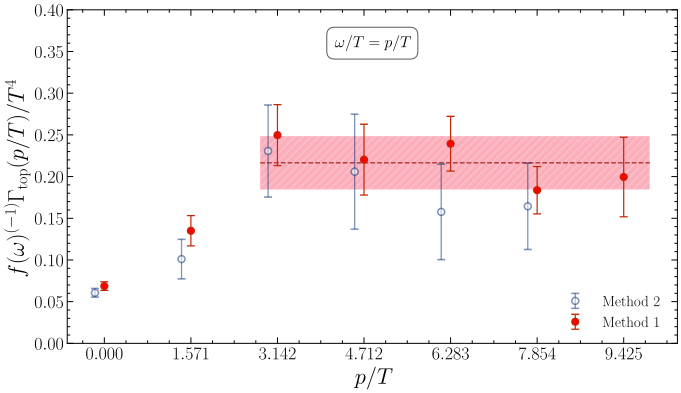
\(\rho(p,p)/\omega\) reaches a plateau for \(p/T \gtrsim 3\):
\(f^{-1}\Gamma_{\mathrm{top}}/T^4 \approx 0.216(32)\) ⇒ \(\Gamma_{\mathrm{top}}(p)\) grows linearly in \(p\),
as predicted semiclassically: \(\Gamma_{\mathrm{top}}(p) = p\,(\alpha_s T)^3 \left[A \log\frac{pT}{m_D^2} + B\right]\) [9]
No contradiction with the suppression of \(G_E\):
off-shell, \(\Gamma_{\mathrm{top}}\) decreases with \(p\) only at fixed \(\omega\), while it grows with \(\omega\) at fixed \(p\).
On the diagonal \(\omega = p\) the growth wins.
Outlook → full QCD at the physical point: temperature dependence, and the expected light-quark enhancement of the momentum-dependent rate.
Questions?
Mock test: synthetic \(G(\tau_i)\) from a known \(\rho(\omega)\), tiny noise → naive inversion \({\rho} \sim K^{-1} G\)
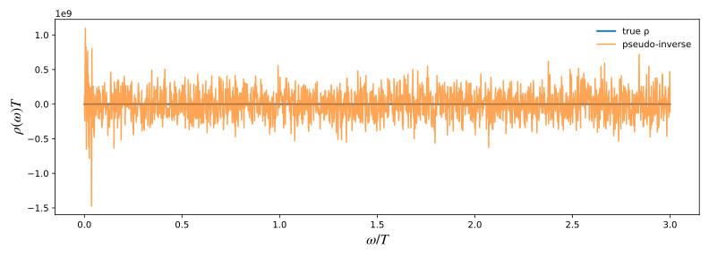
Sub-percent fluctuations in the input explode into \(\mathcal{O}(10^9)\) oscillations in the output.
The smeared, regularized HLT estimator is not optional — it is what makes the problem tractable.
[1] Fukushima, Kharzeev, Warringa, Phys. Rev. D 78 (2008) 074033 [arXiv:0808.3382]
[2] Kharzeev, Liao, Tribedy, Int. J. Mod. Phys. E 33 (2024) 2430007 [arXiv:2405.05427]
[3] Notari, Rompineve, Villadoro, Phys. Rev. Lett. 131 (2023) 011004 [arXiv:2211.03799]
[4] Meyer, EPJA 47 (2011) 86 — Lowdon, Phys. Rev. D 106 (2022) 045028
[5] Hansen, Lupo, Tantalo, Phys. Rev. D 99 (2019) 094508 [arXiv:1903.06476]
[6] Bonati, D’Elia, Phys. Rev. D 89 (2014) 105005 [arXiv:1401.2441]
[7] Bonanno, D’Angelo, D’Elia, Maio, Naviglio, Phys. Rev. D 108 (2023) 074515 [arXiv:2305.17120]
[8] Bonanno, D’Angelo, D’Elia, Maio, Naviglio, Phys. Rev. Lett. 132 (2024) 051903 [arXiv:2308.01287]
[9] Moore, Tassler, JHEP 02 (2011) 105 [arXiv:1011.1167] — Notari et al. [arXiv:2211.03799]
Topological rate at finite momentum in SU(3) Yang–Mills